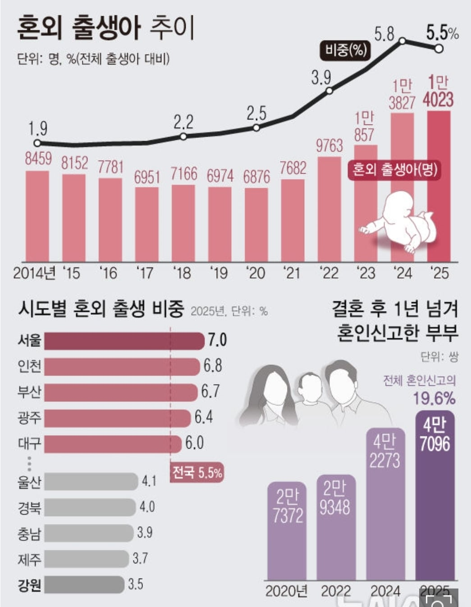

작년 혼외 출생, 1981년 통계 작성 이래 최대
전체 출생아 중 혼외 출생아 5.5%로 역대 2위
혼인신고 부부 19.6%, 결혼 후 1년 이상 걸려
부부 소득 합산에 정책대출 탈락 우려도 나와
"결혼이 불리한 선택 되지 않게 제도 개선해야"

원본보기
https://n.news.naver.com/article/comment/003/0014240431
[서울=뉴시스]
[세종=뉴시스]박광온 기자 = 지난해 혼인하지 않은 상태에서 태어난 아이가 1만4000명을 넘어서며 1981년 통계 작성 이래 가장 많았던 것으로 나타났다. 전체 출생아에서 차지하는 비중도 역대 두 번째로 높았다.
혼인신고를 늦추는 부부도 늘고 있다. 지난해 혼인신고를 한 부부 5쌍 중 1쌍은 실제 결혼 이후 신고까지 1년 이상 걸린 것으로 집계됐다.
정책대출 등의 소득·자산 기준 때문에 결혼식을 올리고 함께 살면서도 법적인 혼인신고를 미루는 경우가 늘면서, 이른바 '결혼 페널티'가 혼외 출생 증가에 영향을 미치는 요인 중 하나일 수 있다는 분석이 나온다.
예전부터 나오던 얘기지만, 진실은 윗물들이 자기 자녀들한테 지원금 몰아주려고 하는 거임.
말도 안되는 조건을 만들어 두고 근로소득에 목메도 되지 않는 금수저들이 다 뽑아먹을 수 있도록 살뜰히 설계해둔 거임.
주택 청약도 마찬가지고.
그래서 이 정책은 안 고쳐질 거라고 봐야 함
https://blog.naver.com/namgikun/223256235482